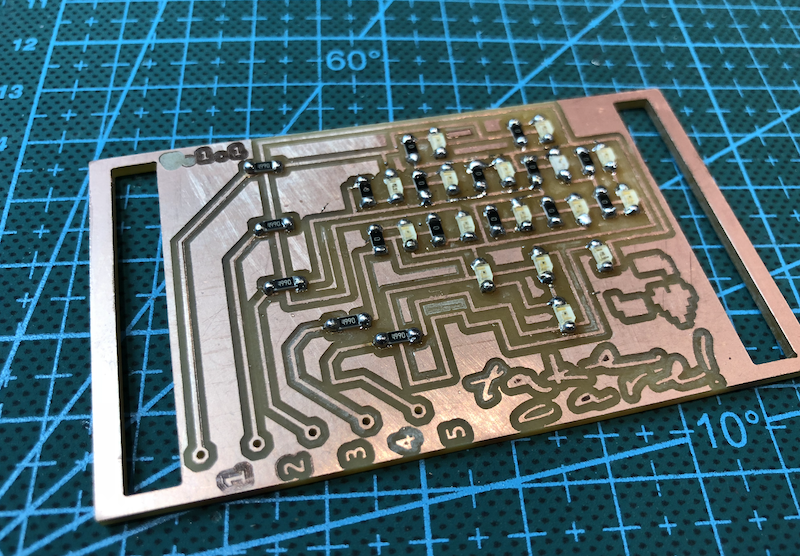
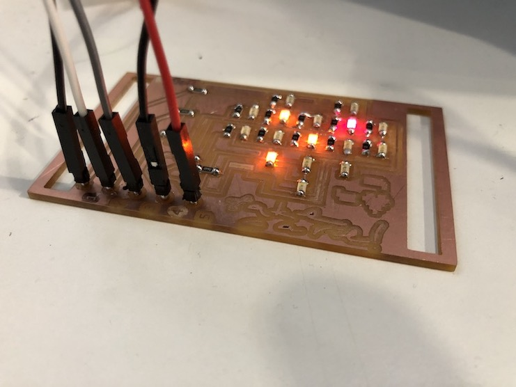

✺ Back
Take Care: Charlieplexing Heart LED
Charlieplexing is a way of controlling LEDs individually using a limited number of pins. This is a sixteen-LED charlieplexing board that can be wired to five output signal pins for programming. Full process and notes on this board design can be found HERE. 
Back